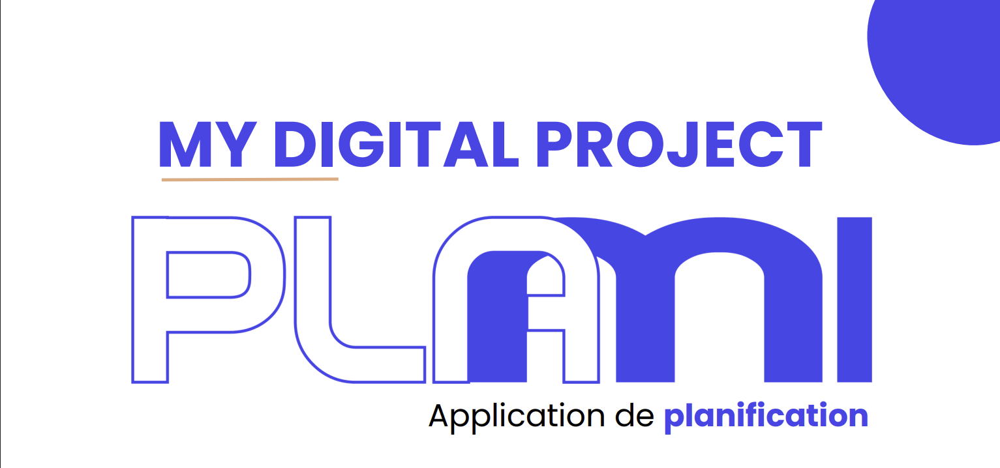
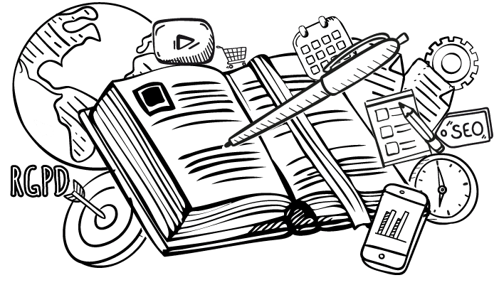
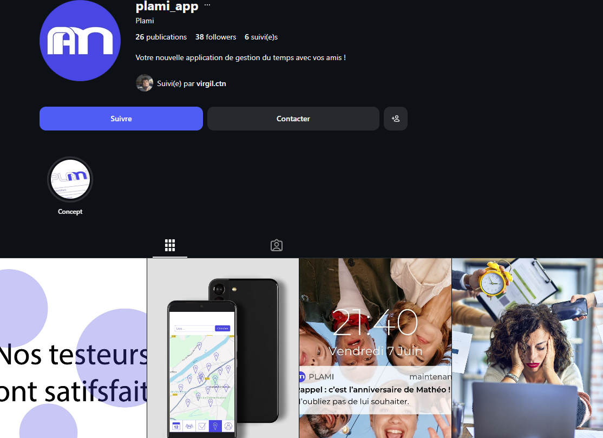

← Projets scolaires · Projet 2024
Plami
Plami est un projet d'application d'organisation personnelle pensée pour simplifier la planification du quotidien : centraliser ses tâches, son emploi du temps et ses priorités dans une interface claire, sans la surcharge des outils de productivité classiques. Le principal atout de cette application est qu'elle possède une fonctionnalité collaborative pour pouvoir organiser des sorties à plusieurs.
Le contexte
Pourquoi Plami ?
Entre les cours, les projets, les rendez-vous personnels et les imprévus, la charge mentale liée à l'organisation du quotidien devient vite difficile à tenir avec des outils trop génériques (agenda seul, to-do list seule, notes éparpillées). L'objectif de ce projet était de créer un projet d'application de A à Z soit la maquette, le concept, mais aussi de concevoir sa mise en place avec la stratégie de communication pour la promouvoir. Il nous fallait aussi prendre en compte les différents points à prendre en compte pour créer une application comme le budget, la concurrence et les cibles à travers des techniques de marketing.
Plami est un projet étudiant non développé mais dont nous avons réaliser la maquette qui est pensé pour répondre à ce besoin : une application qui réunit tâches, planning et priorités dans une seule interface, pensée pour rester simple à utiliser au quotidien plutôt que de multiplier les fonctionnalités.


.png)
Ma contribution
Mon rôle sur le projet
Sur Plami, j'ai pu participer à diverses tâches de gestion de projet mais aussi de graphisme et de communication.

Identité visuelle
Définition de l'identité de l'application (palette, typographie) et conception des pictogrammes : pour garder une cohérence visuelle sur l'ensemble de l'application.

Pilotage & organisation
Structuration du projet en étapes avec des deadlines, répartition des tâches au sein de l'équipe, mise en place de planning, rédaction de documents importants pour le projet (cahier des charges, charte éditorial).
Voir le cahier des charges →
Valorisation du projet
Création d'une campagne de communication autour de Plami : mise en récit du projet, post et contenu pour les réseaux sociaux instagram et LinkedIn et discours pour donner envie de le découvrir.
Voir les réseaux sociaux →Pour accéder à la présentation du projet, cliquez juste ici :
→ Voir la présentationMéthode
Le déroulé du projet
Comprendre et comparer le besoin
Analyse des concurents et des outils déjà sur le marché, pour identifier ce qui manquait à un utilisateur qui veut organiser son quotidien et pour se démarquer des autres.
Cadrer le projet
Définition des fonctionnalités prioritaires, répartition des rôles dans l'équipe et mise en place d'un planning de production de contenu et d'avancement du projet.
Construire l'identité et l'interface
Création de l'identité visuelle de Plami puis déclinaison en wireframes, puis en maquettes haute-fidélité des écrans clés (accueil, planning, tâches).
Présenter le projet
Élaboration des contenus pour les réseaux sociaux pour rendre Plami lisible et convaincant auprès d'un public extérieur au projet.
Bilan
Ce que Plami m'a appris
Ce projet m'a permis de travailler sur l'ensemble d'un projet, du concept à sa présentation : Créer une identité visuelle cohérente avec mon besoin, coordonner une équipe autour d'un planning commun, et défendre le projet à travers une communication claire.